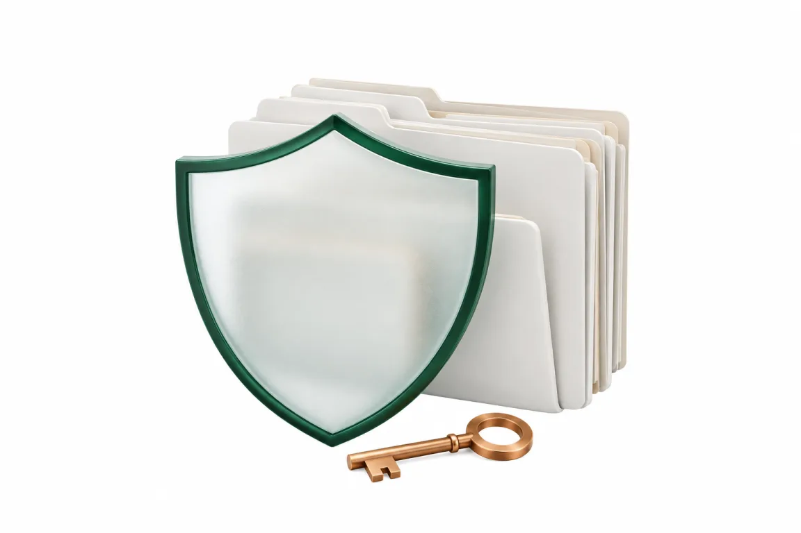

小さな会社に、
診療の土台を預けるために。
その不安には、言葉ではなく仕組みと契約でお答えします。

これまでのデータは、こちらで移します
今お使いのシステムによって取り出せる範囲が違うため、方法は医院さまごとに確認してからご案内します。荻窪ツイン動物病院では11年分・267万件の診療明細を、飼い主さんとペットの登録だけでなく記録ごと移しました。
守りの仕組み
医院ごとに、区画を分けます
本体はクラウドに置き、アプリ・データベース・権限・鍵まで医院ごとに分けます。1か所の事故がほかの医院に広がらない作りです。
院内の機械は、最小限
院内に置くのは、検査機器やレントゲンとつなぐ小さな中継機だけ。置くのは機器とのやり取りに要るデータと、回線が切れたときに診療を続けるための控えだけです。
回線が切れても、診療を続けられます
予備のモバイル回線、中継機の控え、紙で続ける手順の3つを標準で用意します。
バックアップは「戻せるか」まで
控えを取るだけで終わらせず、実際に戻せるかを医院ごとに試します。
AI は下書きまで
獣医師が確認して確定するまで、カルテには入りません。AI へ送るのは下書きに必要な文章だけで、法人向けの契約で学習には使われません。
解約しても、データはお返しします
カルテの本文・画像・検査結果まで、追加料金なしでお返しします。中継機は回収して消去し、消去証明書をお渡しします。
第三者の目と、権利
特許出願中
医院ごとに進化する仕組みについて、特許を出願しています（特願2026-209921）。
ISMS 取得準備中
情報セキュリティの国際規格 ISO/IEC 27001 と、クラウドの規格 27017 の取得に向けて準備を進めています。
セキュリティ情報を毎日公開
私たちの守り方と、世界のセキュリティの最新情報を毎朝更新して公開しています。
セキュリティ情報を見る
ほかの医院さま向けには、本体をクラウドの医院ごとの区画に置く形でご提供します。現在、その準備を進めています（荻窪ツイン動物病院では院内のサーバーで本番稼働中です）。
まずは資料を、
LINE で受け取ってください。
病院名・院長名・（開業前の方は）開業予定の時期をお送りください。確認のうえ、詳しい資料と画面の動画をお届けします。